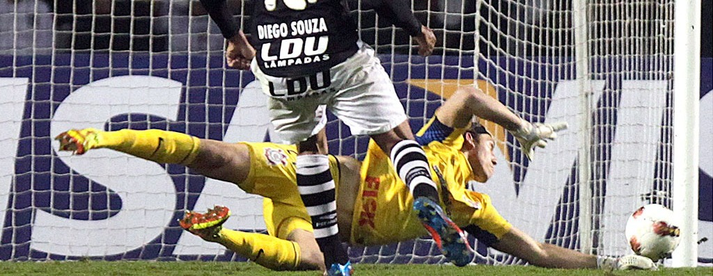

voltar para primeira pagina

Umas das defesas mais espetculares da historia da libertadores da america a defesa de cassio contra o vasco mais expecificamente contra o diego souza talvez se o cassio tomasse esse gol o corinthians não teria mais forças para fazer o unico gol da partida que foi do paulinho que foi no final do jogo